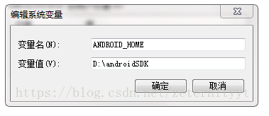

原文连接:https://www.cnblogs.com/gxp69/p/10655423.html
1、搭建开发环境
1.1安装Chocolatey
用管理员打开cmd，执行以下命令：
powershell -NoProfile -ExecutionPolicy Bypass -Command "iex
((new-object net.webclient).DownloadString('https://chocolatey.org/install.ps1'
))" && SET PATH=%PATH%;%ALLUSERSPROFILE%\chocolatey\bin
执行完毕之后，chocolatey就安装好了。
1.2安装Python
choco install python2
1.3安装node
choco install nodejs.install
1.4安装yarn、react-native-cli
npm install -g yarn react-native-cli
1.5安装java
1、下载
官网地址：http://www.oracle.com/technetwork/java/javase/downloads/index.html
2、安装JDK
直接运行exe可执行程序，默认安装即可；
备注：路径可以选其他盘符，不建议路径包含中文名及特殊符号。
3、配置环境变量
1) 新建变量名：JAVA_HOME，变量值：C:\Program Files\Java\jdk1.8.0_11
2) 打开PATH，添加变量值：%JAVA_HOME%\bin;%JAVA_HOME%\jre\bin
3) 新建变量名：CLASSPATH，变量值：;%JAVA_HOME%\lib\dt.jar;%JAVA_HOME%\lib\tools.jar
备注：
1) .表示当前路径，%JAVA_HOME%就是引用前面指定的JAVA_HOME；
2) JAVA_HOME指明JDK安装路径，此路径下包括lib，bin，jre等文件夹，tomcat，eclipse等的运行都需要依靠此变量。
3) PATH使得系统可以在任何路径下识别java命令。
4) CLASSPATH为java加载类(class or lib)路径，只有类在classpath中，java命令才能识别。
4、测试jdk
在CMD命令窗口下输入javac 命令，出现如下界面，则安装成功。

1.6安装Android Studio
l 确定所有安装都勾选了，尤其是Android SDK和Android Device Emulator。
l 在初步安装完成后，选择Custom安装项：
l 检查已安装的组件，尤其是模拟器和 HAXM 加速驱动：

1.7安装SDK、配置环境变量
右键我的电脑，打开属性，点击高级系统设置，打开环境变量：
1、新建一个环境变量名称为ANDROID_HOME，变量值为当前安装SDK的目录
例如SDK装在D:\androidSDK中，则环境变量为：

2、把%ANDROID_SDK_HOME%\platform-tools;%ANDROID_SDK_HOME%\tools添加到Path环境变量中。
1.8创建新项目
使用 React Native 命令行工具来创建一个名为"AwesomeProject"的新项目：
react-native init AwesomeProject
编译并运行 React Native 应用
cd AwesomeProject
react-native run-android
环境搭建与编译问题
Q：编译时报错，报错信息中含有Could not determine Java version等字样
A：重装JDK1.8，注意目前不能使用更高版本
Q：编译时报错，报错信息中含有“:app:packageDebug”等字样
A：安装Gradle
Q：运行adb reverse tcp:8081 tcp:8081时报错，报错信息中含有'adb' 不是内部或外部命令等字样
A：SDK环境变量配置有问题，重新配置/platform-tools，\tools，重启Android studio